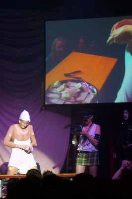

| Lene Leth Lebbe - Kattegoti: Bugler |
 |
| Vinder af HR&FRU dunst Lene Leth Lebbe lavede æggemadder og
trykkede sine bugler/bumser med betændelse (eller var det majornaise?)
ud på æggemadderne. Publikum følger med på storskærmen.
Photo: Hans Jørgensen |